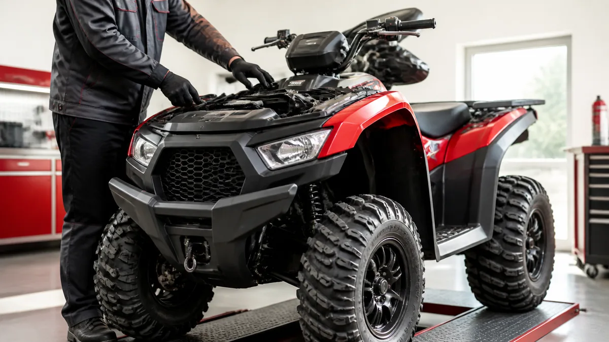

КВАДРОЦИКЛЫ · 07
Подготовка квадроцикла к сезону
Перед первым выездом полезно вернуть квадроцикл к регламентному состоянию и проверить узлы после хранения.

Базовый осмотр
- Проверьте уровень масла, охлаждающей и тормозной жидкостей, состояние топливных шлангов.
- Осмотрите шины, крепёж колёс, пыльники ШРУСов и рычаги.
- Проверьте тормоза, свет, лебёдку и работу аварийного выключателя.
Первый выезд
Начните с короткой поездки без серьёзной нагрузки. Прислушайтесь к трансмиссии, оцените работу рулевого управления и тормозов.
Трансмиссия и охлаждение
Очистите радиатор и проверьте корпус вариатора, воздухозаборники и воздушный фильтр. Ремень с трещинами, запахом гари или следами перегрева требует оценки причины, а не только замены.
Первый выезд
- Начните без брода, прицепа и тяжёлой нагрузки.
- Оцените работу руля, тормозов и трансмиссии.
- После поездки проверьте потёки и крепёж.
Полезно после проверки
Сохраняйте записи о замене жидкостей, ремня и фильтров. Такой журнал помогает планировать ТО по моточасам, а не вспоминать обслуживание только после появления симптомов.